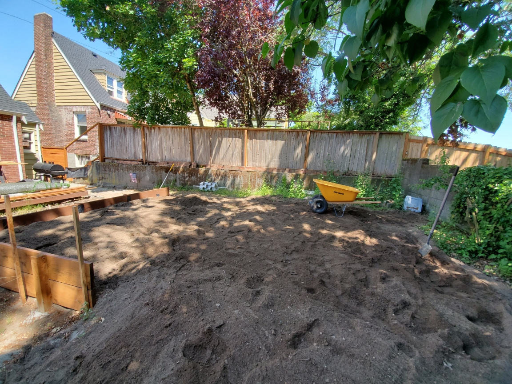
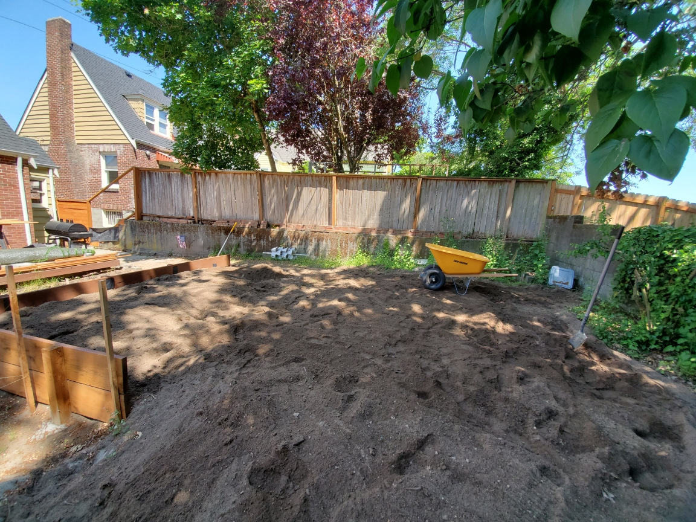
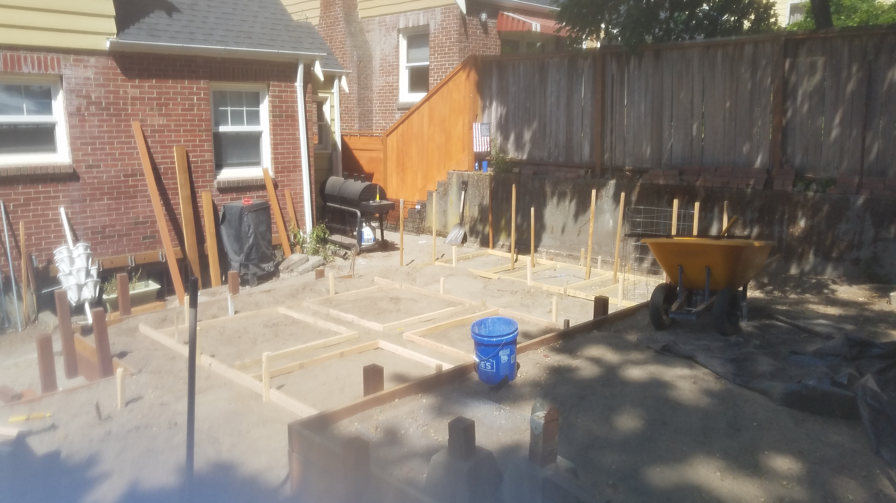
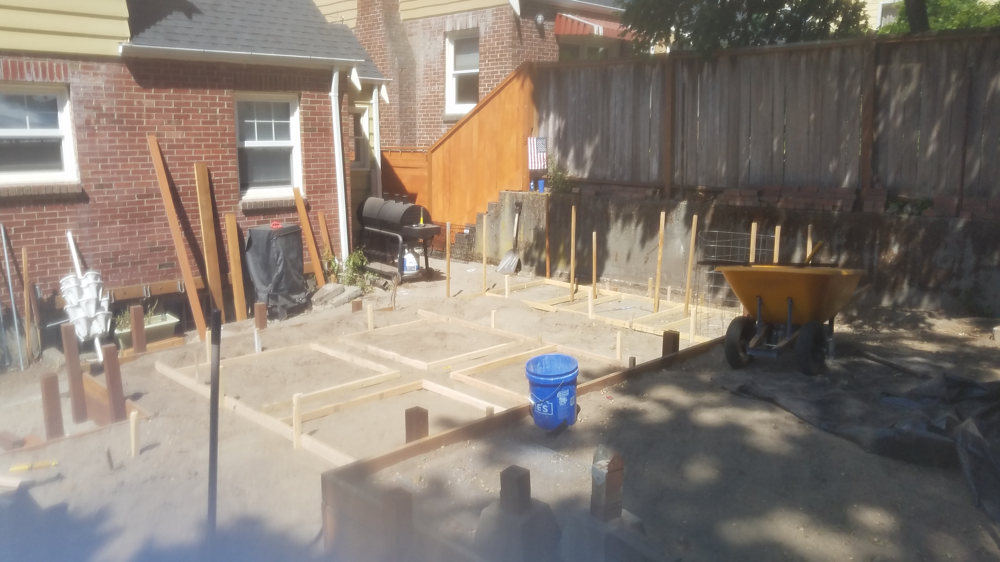

Breaking Ground: Dirtwork
The greenspace has been temporarily removed, and the excavation process has begun. In this phase, I will be installing terraces to level out the terrain, creating flat areas that will maximize the space's usability. The goal is to reshape the land, transforming uneven sections into functional, terraced spaces that will soon support new landscaping features.


During the excavation, the soil is being removed to prepare the area for the terracing. 4x6 posts are being driven into the ground to support the 8' x 16" x 2" boards that will make up the terraces. These posts will secure the boards in place, creating stable levels for the landscaping and helping to reshape the terrain as part of the project.

 

 


The terracing is all done, and now I'm working on building up the different levels. Each section is being shaped to create flat, usable spaces that will be perfect for planting, paths, or whatever else the space needs. With the layers set, I'm getting the area ready for the next steps, making sure everything is level and in place before we add the finishing touches.